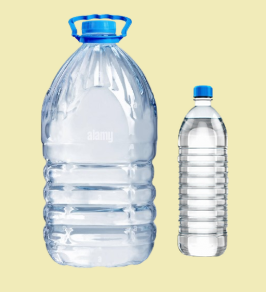
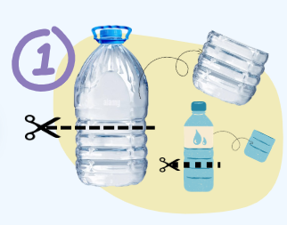
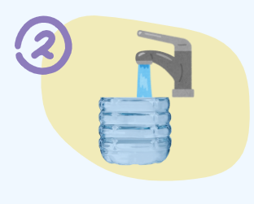
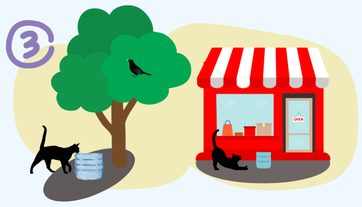
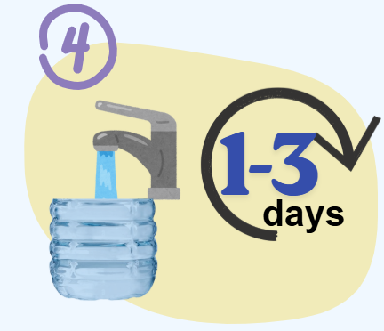
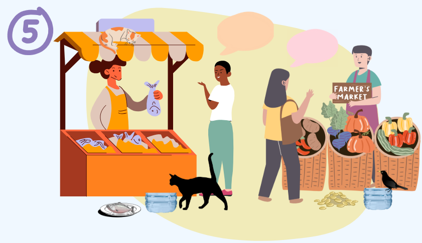

materials

A clean plastic bottle, jug, or large container

Scissors or a sharp knife

Find a clean plastic bottle, jug, or large container. Cut it in half. Smooth or cover the edges so there are no sharp parts. Make sure the bowl is low enough for cats to reach comfortably.

Fill the container with fresh, clean water. Avoid milk or flavored liquids just water is safest for cats.

Place the bowl in a shaded, safe spot away from direct sun to prevent algae growth and bacteria. Keep it slightly away from roads and footpaths so people don’t trip over it or kick it. Good places include near a wall, under a tree, or by a quiet home entrance. Make sure it’s in an area cats are known to frequent.

Refill the bowl every 1–3 days to keep it fresh. If the container becomes dirty, slimy, or damaged, replace it immediately.
